Mieszkanie 3 pokojowe dla rodziny, wyższy standard *Osiedle Wilno*
, Warszawa Targówek
1 120 000 PLN
67.41 m2
3 pokoje
1 piętro
OPIS
Przestronne i jasne 3-pokojowe mieszkanie z loggią, miejscem postojowym w garażu i komórką lokatorską (murowana, nie box). Położone na pierwszym piętrze nowoczesnego budynku przy ul. Pohulanka 10 na Osiedlu Wilno na Targówku.
MIESZKANIE
- 3 pokoje
- powierzchnia 67,41 m²
- 1 piętro
- loggia 9m²
- budynek z 2017 roku
- ekspozycja wschód/południowy zachód
Mieszkanie zostało zaprojektowane przez pracownię projektową, ma przemyślany, funkcjonalny rozkład i jest gotowe do wprowadzenia bez dodatkowych nakładów finansowych.
UKŁAD POMIESZCZEŃ
- salon z aneksem kuchennym i wyjściem na balkon (ekspozycja wschód)
- sypialnia nr 1 z miejscem do pracy (ekspozycja południowy-zachód)
- sypialnia nr 2 obecnie zaaranżowana na pokój dziecięcy (ekspozycja południowy-zachód)
- łazienka z wanną i parawanem prysznicowym
- garderoba/pralnia (pierwotnie WC, są przyłącza wody)
- przedpokój z pojemną zabudową
BUDYNEK I OSIEDLE
Osiedle Wilno powstało w 2012 roku i charakteryzuje się nowoczesną, niską zabudową wykończoną w wysokim standardzie. Kameralna, ogrodzona przestrzeń z zadbaną zielenią zapewnia poczucie bezpieczeństwa i komfortu. Budynek ma 3 kondygnacje i windę.
INFRASTRUKTURA I UDOGODNIENIA
Osiedle Wilno zapewnia pełen dostęp do miejskiej infrastruktury. Na jego terenie znajduje się stacja kolejowa, która w połączeniu z II linią metra umożliwia szybkie dotarcie do centrum miasta.
Na osiedlu znajdują się m.in.:
- Sklepy spożywcze, Pepco, Rossmann, apteki, restauracje, piekarnie i salony kosmetyczne
- Przedszkole "Uśmiech Malucha" i Żłobek "Jaśkowa Kraina"
- Przystanek autobusowy "plac Ostrej Bramy"
- Stacja Kolejowa "Warszawa Zacisze Wilno" (4 minuty do M2)
- Boisko
W pobliżu osiedla:
- Tereny rekreacyjne Zalew Bardowskiego
- Ogródki działkowe
- Szkoła podstawowa nr 58
- Metro Trocka ok. 2km
STAN PRAWNY I DODATKOWE INFORMACJE
- Mieszkanie zakupione w 2017r.
- Pełna własność, bez obciążeń kredytowych
- Garaż na osobnej księdze wieczystej
- Czynsz administracyjny: 1087zł
- Mieszkanie może być idealnym rozwiązaniem dla inwestora - obecni właściciele są skłonni pozostać w lokalu jako najemcy do końca 2026 roku, gwarantując nowemu właścicielowi natychmiastowy dochód z najmu.
- W przeciwnym razie preferowany termin przekazania kluczy - listopad 2026
CENA
- Cena mieszkania: 1 120 000 zł
- Cena miejsca postojowego 40 000 zł
- Cena komórki lokatorskiej : 20 000 zł
Możliwość obejrzenia mieszkania 7 dni w tygodniu, dowolne godziny
Sprzedaż bezpośrednio bez prowizji
Zapraszamy do kontaktu
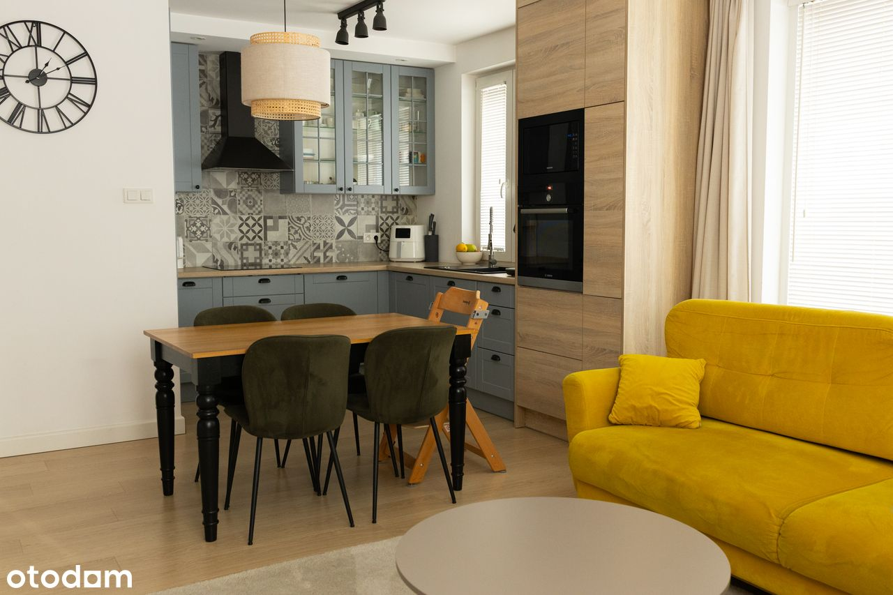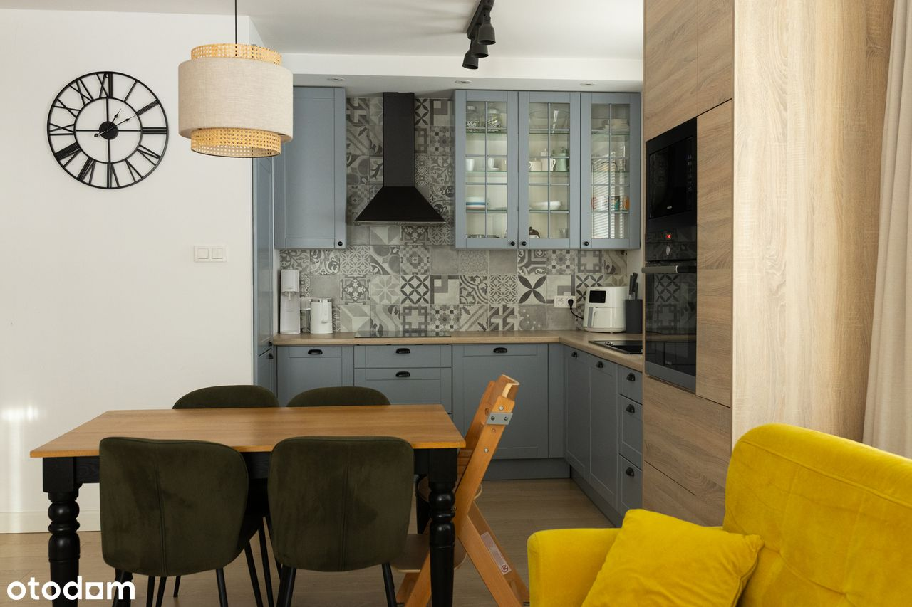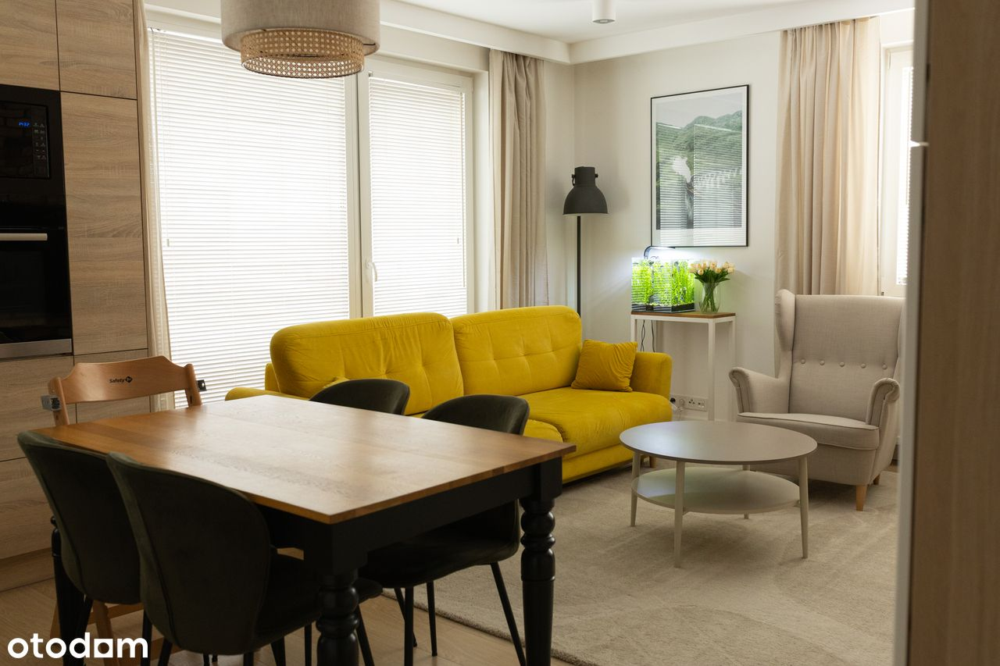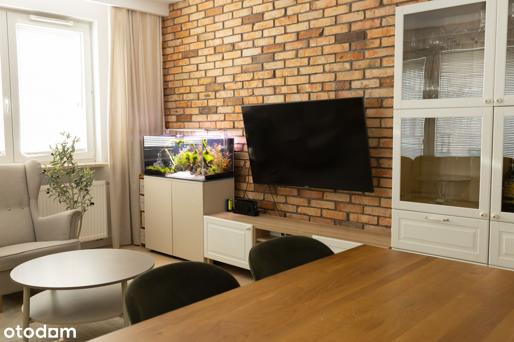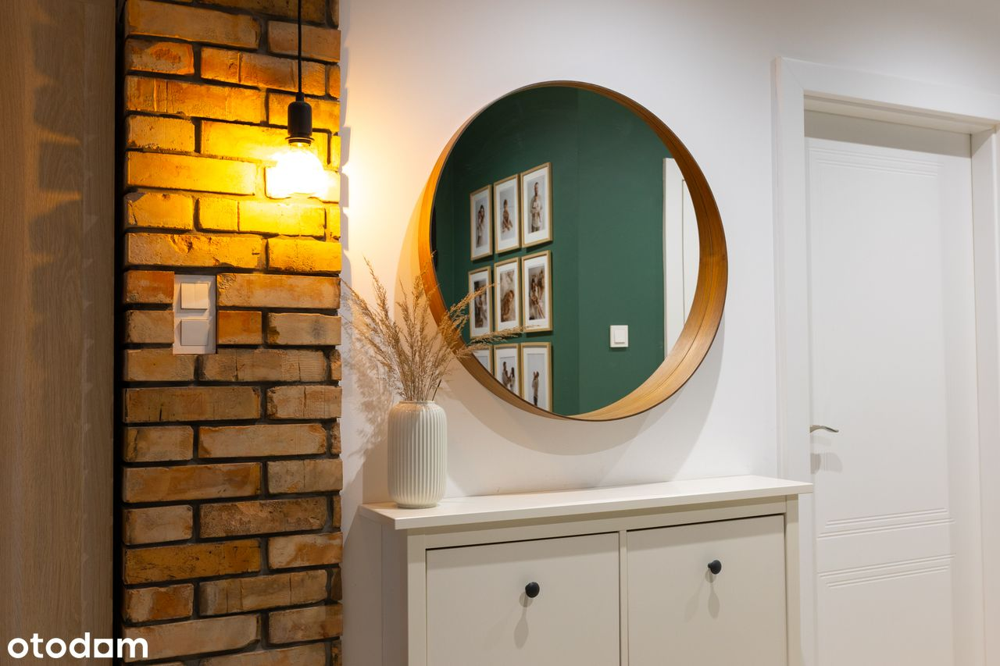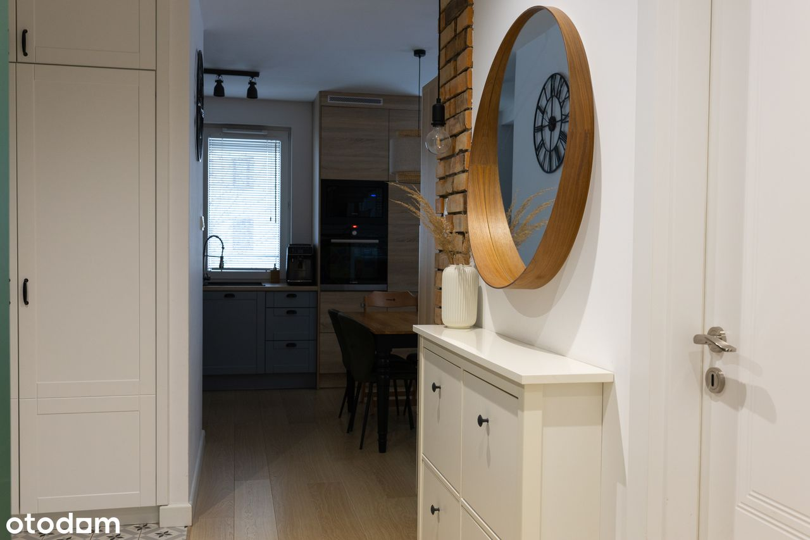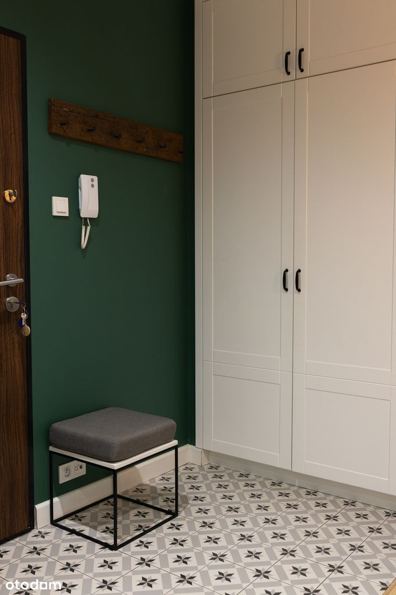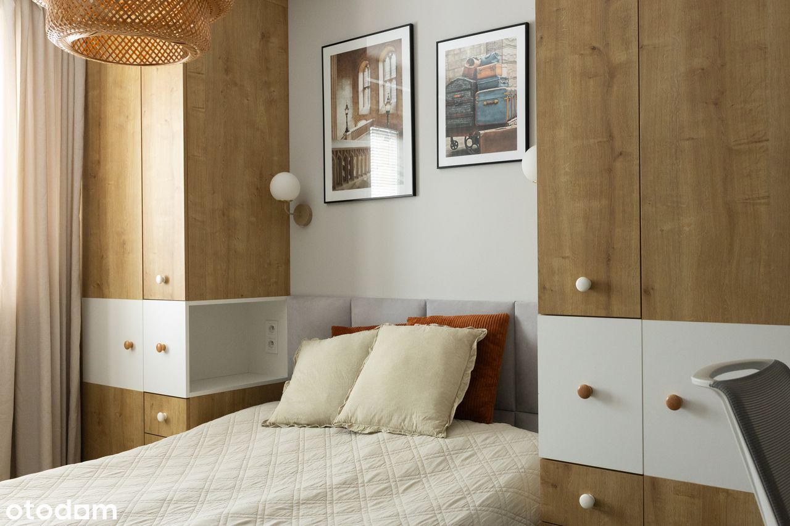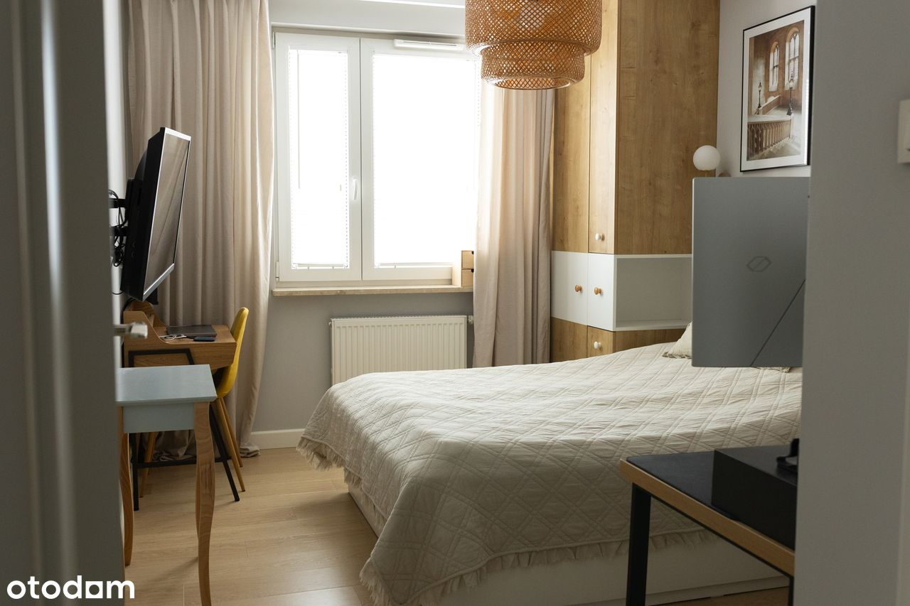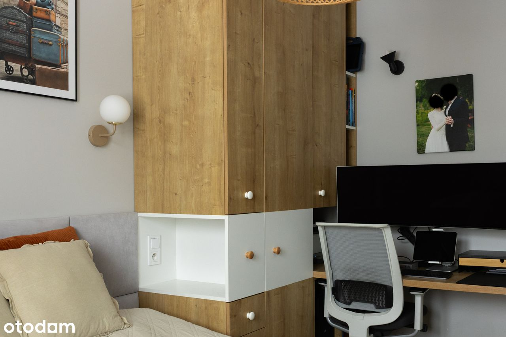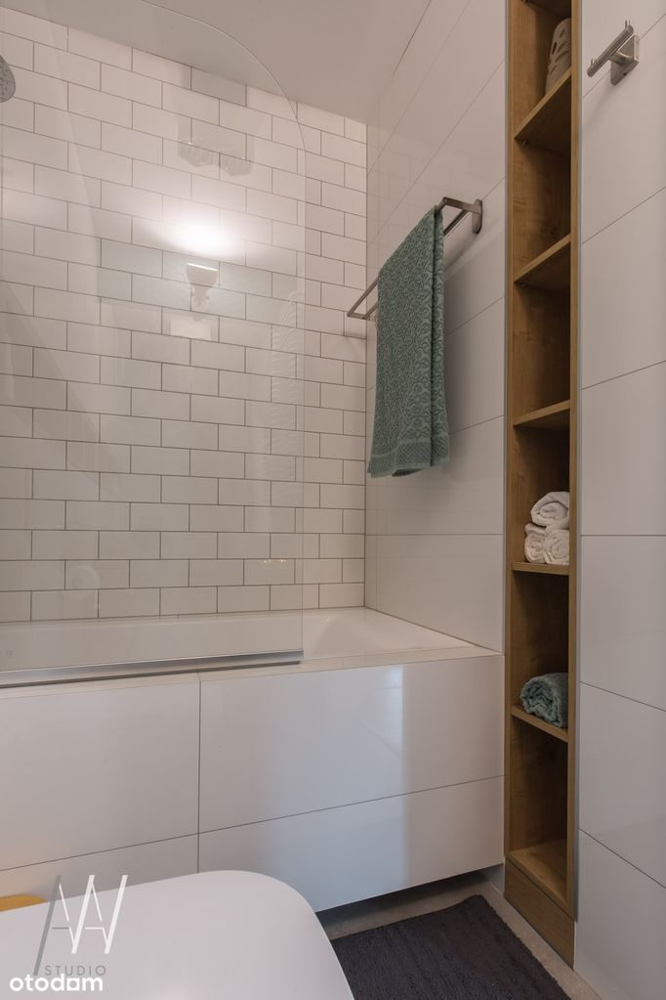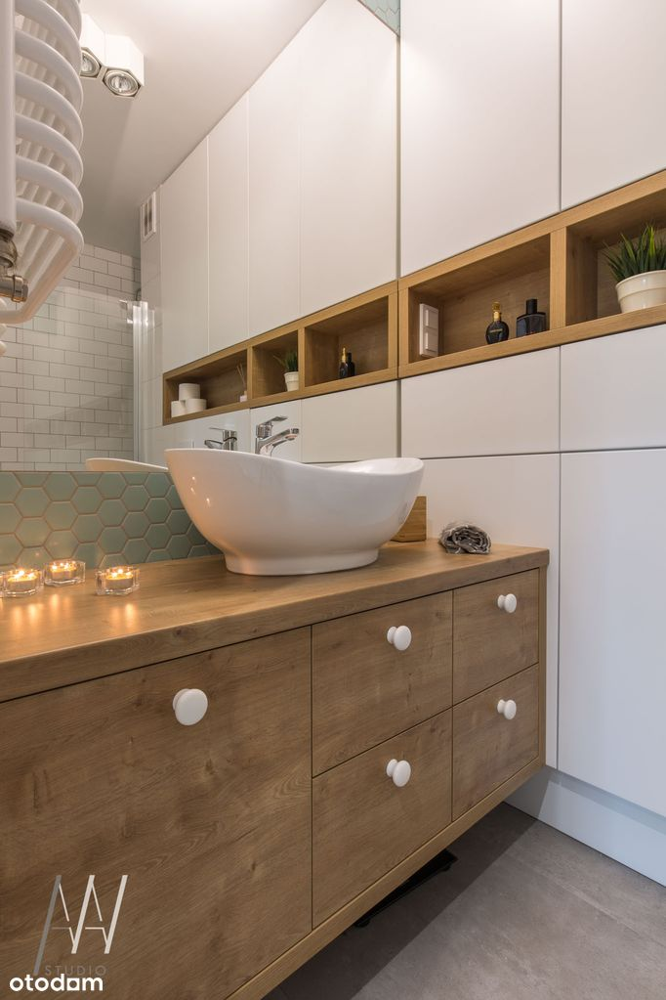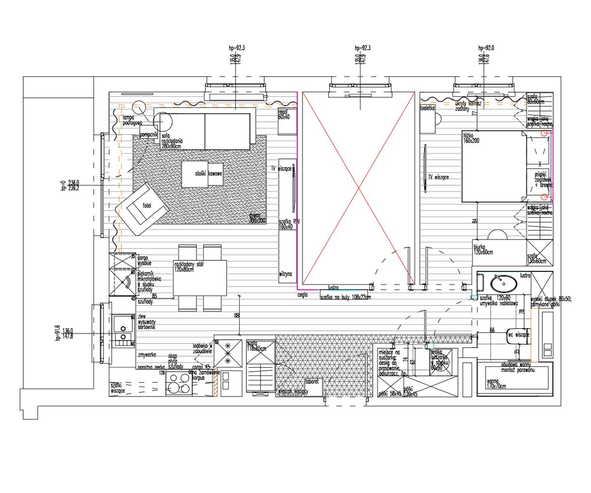